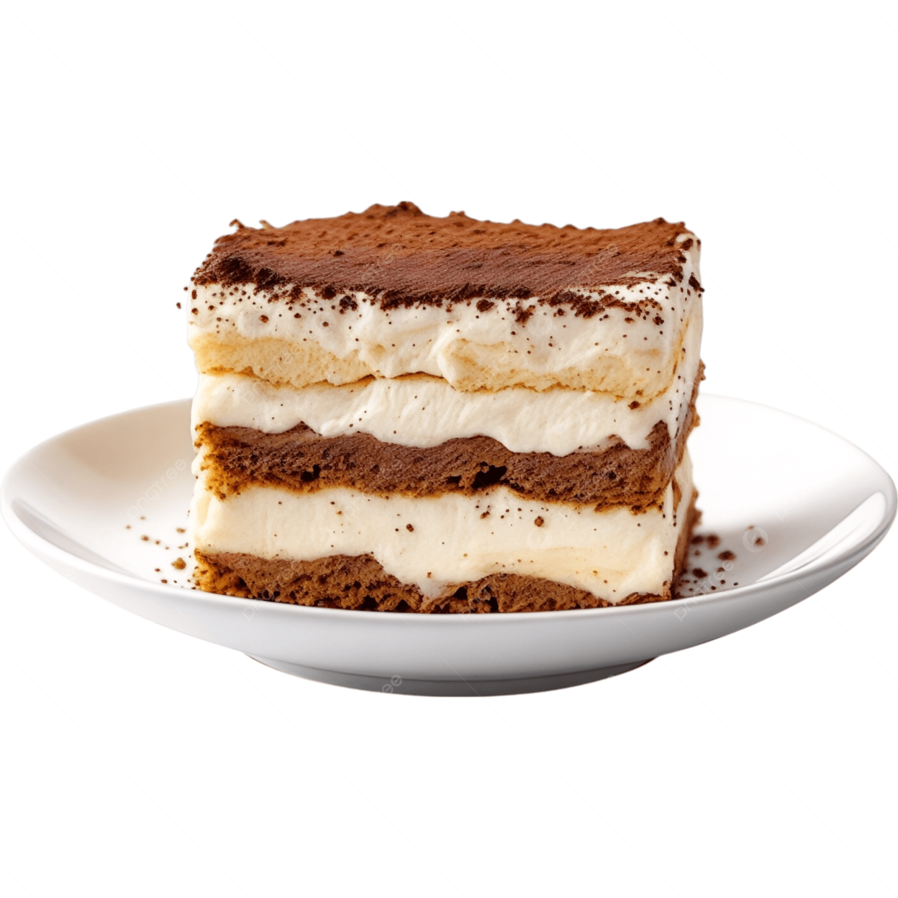

Tiramisù is the quintessential Italian dessert, known worldwide for its creamy texture and bold coffee flavor.
This classic no-bake treat is made by layering espresso-soaked ladyfingers with a rich mascarpone cream,
lightly sweetened and whipped to perfection.
The final touch is a dusting of bitter cocoa powder, which balances the sweetness and enhances its depth of flavor.
This recipe is from the Italian web site: Giallo zafferano's .